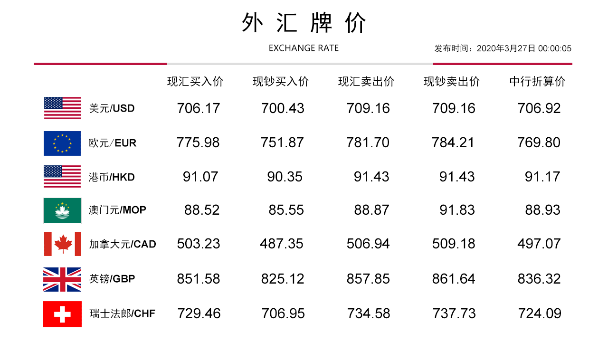
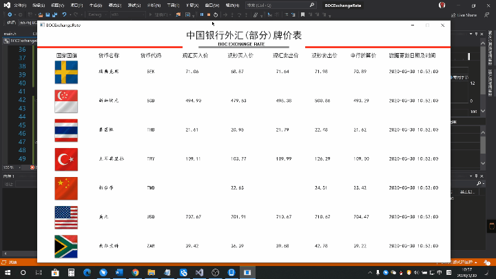

中国银行外汇牌价看板项目实现记录。
前言 声明：本项目并没有进行非法用途，只是用来学习相应的知识的。
2020年3月9日科锐的预科班开始了，在 Tony He 老师半个月带领下，我最终完成了 BOC外汇牌价看板 这个小项目。Tony He 老师的讲课方式刷新了我的认知，可以说要比在校期间老师们的讲课方式效果上要好很多。在这半个月里，何老师以最终的小项目为目的，讲其所用到的知识点分成批次，每天给我们讲解一点所需的知识点，由浅入深，坚持每天练习所讲的知识点。经过这半个多月的学习，也将我之前学的相关C语言 知识进一步等到了巩固，指针、文件操作等。记得 Tony He 老师的一句话：**”掌握了正确的学习程序设计的方法就是，从解决实际需求出发、带着问题学、急用先学，学以致用。当你在实践中遇到一个问题，就去寻找这个问题的答案，每次找到的答案帮助你解决一个实际的问题，然后又遇到一个新的问题，然后再解决它……你的学习就会变得非常有效，而且你学到的知识就是最实用、最急用的知识。”** 这句话讲的确实很对。
准备 由于最终的项目需要爬取BOC的实时数据，所以这一点也是最难的一点。由于是预科班，班上大多数师兄，基础都不是很好（当然也包括我），所用的程序接口都还不会写。考虑到这里 Tony He 老师就自己做了一个，供大家调用学习。
项目所用到的知识点：
C 语言基础语言
C 语言指针
C 语言文件的操作（读取，存储）
C 语言结构体
C++ 类&对象
C++ 类的封装
C++ 继承、构造函数、析构函数
EaxyX 图形库的简单使用
外汇牌价看板设计要求 外汇牌价看板是一个基于C/S应用程序，用于显示中国银行实时外汇牌价。
程序运行环境 本系统运行与Windows操作系统（至少兼容Windows 10），程序工作时计算机应连接互联网
UI设计 程序运行的窗口分辨率需要为 1280 * 720像素，运行效果如下图：

程序功能说明
程序启动时，调用BOCRates接口库，取得牌价数据保存为磁盘文件，并按照上图的形式显示；
需要显示的外币种类包括：阿联酋迪拉姆、澳大利亚元、巴西里亚尔、加拿大元、瑞士法郎、丹麦克朗、欧元、英镑、港币、印尼卢比、印度卢比、日元、韩国元、澳门元、林吉特、挪威克朗、新西兰元、菲律宾比索、卢布、沙特里亚尔、瑞典克朗、新加坡元、泰国铢、土耳其里拉、新台币、美元、南非兰特，共计27种；
每页显示7种外汇牌价，一次显示一页，每页显示20秒后启动切换至下一页；（注：为便于调试可适当减少时间间隔）；
每10分钟从服务器重新获取一次最新的汇率数据并显示，在最左上角显示外汇更新时间。
当汇率接口服务器不能连接时，自动取出最后一次成功获取的汇率数据，并将其重新显示出来。
程序实现 这里记录下我的功能实现过程
整理所需的头文件 新建一个头文件 main.h，将所用到的头文件都放在这一个文件内，然后再所需的文件内包含该头文件即可
1 2 3 4 5 6 7 8 9 10 11 12 13 14 15 16 17 18 19 20 21 22 23 24 25 26 27 28 29 30 31 32 33 #pragma once #include <stdio.h> #include <conio.h> #include <graphics.h> #include <assert.h> #include <io.h> #include <D:/CR37/BOCExchangeRate/BOCRates/BOCRates.h>// 接口库头文件 #pragma comment(lib, "D:/CR37/BOCExchangeRate/BOCRates/BOCRates.lib" ) typedef struct BitMapHeader { long Size; short Reserved1; short Reserved2; long OffBits; typedef struct BitMapInfo { long Size; long Width; long Height; short Planes; short BitCount; long Compression; long SizeImage; long XPelsPerMeter; long YPelsPerMeter; long ClrUsed; long ClrImportant;
初始化绘图框 再这里新建了一个类，名为：CExchange，对应的头文件进行方法的声明，对应的 .cpp 文件用来方法的实现。
CExchange.h
1 2 3 4 5 6 7 8 9 10 11 #pragma once #include "main.h" class CExchange { private :public :void showGraphic () void drawHorizonLine (int y, int xSart, int xEnd, COLORREF color) void drawVerticalLine (int x, int yStart, int yEnd, COLORREF color) void displayBox (int top, int left, int width, int height, COLORREF color)
CExchange.cpp
1 2 3 4 5 6 7 8 9 10 11 12 13 14 15 16 17 18 19 20 21 22 23 24 25 26 27 28 29 30 31 32 33 34 35 36 37 38 39 40 41 42 43 44 45 46 47 48 49 50 51 52 53 54 #include "CExchange.h" void CExchange::showGraphic () 1280 , 720 ); /初始化一个1280 *720 （像素）的绘图窗口60 , 70 , "国家国旗" );190 , 70 , "货币名称" );320 , 70 , "货币代码" );450 , 70 , "现汇买入价" );590 , 70 , "现钞买入价" );730 , 70 , "现汇卖出价" );850 , 70 , "现钞卖出价" );970 , 70 , "中行折算价" );1090 , 70 , "数据更新日期及时间" );560 , 35 , "BOC EXCHANGE RATE" );30 ; "黑体" )); 460 , 0 , _T("中国银行外汇(部分)牌价表" ));void CExchange::drawHorizonLine (int y, int xSart, int xEnd, COLORREF color) for (int x = xSart; x < xEnd; x++)void CExchange::drawVerticalLine (int x, int yStart, int yEnd, COLORREF color) for (int y = yStart; y < yEnd; y++)void CExchange::displayBox (int top, int left, int width, int height, COLORREF color) for (int y = left; y < height; y++)for (int x = top; x < width; x++)
国旗图片及数据显示位置 创建 CBoxs 类，用于实现国旗图片及数据的显示位置
CBoxs.b声明对应方法
1 2 3 4 5 6 7 8 9 10 11 12 13 14 #pragma once class CBoxs { private :int _top;int _left;int _width;int _height;public :void SetImagesPosition (int top, int left) void SetImagesSize (int width, int height) int GetLeft () int GetTop ()
CBoxs.cpp对应方法的实现
1 2 3 4 5 6 7 8 9 10 11 12 13 14 15 16 17 18 19 20 21 22 #include "CBoxs.h" void CBoxs::SetImagesPosition (int top, int left) void CBoxs::SetImagesSize (int width, int height) int CBoxs::GetLeft () return _left;int CBoxs::GetTop () return _top;
国旗图片的显示 需要读取指定路径的 .bmp 图片文件，对读入的图片进行相应的处理。判断 BMP 文件是否打开成功，判断打开文件的字节大小是否大于20MB，大于20MB拒绝显示，国旗图片打开成功后，为其分配对应字节大小的内存空间，之后将对应的指针，指向 BMP 文件对应的信息头、偏移量、以及像素区域。
基于 CBoxs 父类，创建一个子类：CPictureBoxsCPictureBoxs.h 为保存对应方法的声明
1 2 3 4 5 6 7 8 9 10 11 12 13 14 15 16 17 18 #pragma once #include "CBoxs.h" #include "main.h" class CPictureBoxs :public CBoxsprivate :void * _fileBuffer = NULL ; NULL ; NULL ; void * _pixelData = NULL ; public :int LoadBMPFromFile (const char * fileName) int ShowPicture ()
CPictureBoxs.cpp 为 CPictureBoxs.h 内的方法实现
1 2 3 4 5 6 7 8 9 10 11 12 13 14 15 16 17 18 19 20 21 22 23 24 25 26 27 28 29 30 31 32 33 34 35 36 37 38 39 40 41 42 43 44 45 46 47 48 49 50 51 52 53 54 55 56 57 58 59 60 61 62 63 64 65 66 67 68 69 70 71 72 #include "CPictureBoxs.h" #include "main.h" if (_fileBuffer != 0 )free (_fileBuffer);int CPictureBoxs::LoadBMPFromFile (const char * fileName) "rb" );if (fp == NULL )printf ("文件打开失败\r\n" );return -1 ;else int fileSize = filelength(fileno(fp));if (fileSize > 1024 * 1024 * 1 )printf ("该文件总字节数大于20MB，拒绝显示\r\n" );return -2 ;else malloc (fileSize);if (_fileBuffer == NULL )printf ("内存分配失败\r\n" );return -3 ;else 1 , fp);char *)(_fileBuffer)) + 2 ); char *)(_fileBuffer)) + 14 );char *)_fileBuffer + _bitMapHeader->OffBits; return 0 ;int CPictureBoxs::ShowPicture () int xStart = GetLeft();int yStart = GetTop();char * tags = (char *)_pixelData;for (int y = yStart + _bitMapInfo->Height - 1 ; y >= yStart; y--)for (int x = xStart; x <= xStart + _bitMapInfo->Width - 1 ; x++)2 ], tags[1 ], tags[0 ]));3 ;if (_bitMapInfo->Width * 3 % 4 != 0 && x == _bitMapInfo->Height - 1 )4 - (_bitMapInfo->Width * 3 % 4 );return 0 ;
数据的读取、保存磁盘、以及数据的分页显示 基于 CBoxs 父类创建一个 CRatesList 子类
程序运行从服务器获取数据
从服务器一次性获取最新的数据
返回从服务器获取的外汇牌价数量
将从服务器获取的外汇数据保存到指定磁盘文件内
从磁盘文件中将保存好的外汇数据读取出来
根据索引返回汇率列表中的指定汇率数据
根据索引返回汇率列表中的指定汇率数据
代码实现：
方法声明:
1 2 3 4 5 6 7 8 9 10 11 12 13 14 15 16 17 18 19 20 21 22 23 24 25 26 27 28 #pragma once #include "main.h" class CRatesList { private :NULL ;int _recordCount = 0 ;public :int ReadFromInternet () int GetCount () int SaveToFile (const char * fileName) int LoadFromFile (const char * fileName) ExchangeRate* GetRatesByIndex (int index) ;ExchangeRate* GetRatesByCode (const char * code) ;ExchangeRate* GetRatesByPage (int pageIndex, int pageSize) ;
方法实现:
1 2 3 4 5 6 7 8 9 10 11 12 13 14 15 16 17 18 19 20 21 22 23 24 25 26 27 28 29 30 31 32 33 34 35 36 37 38 39 40 41 42 43 44 45 46 47 48 49 50 51 52 53 54 55 56 57 58 59 60 61 62 63 64 65 66 67 68 69 70 71 72 73 74 75 76 77 78 79 80 81 82 83 84 85 86 87 88 89 90 91 92 93 94 95 96 97 98 99 100 101 102 103 104 105 106 107 108 109 110 111 112 113 114 115 116 117 118 119 120 121 122 123 124 125 126 127 128 129 130 131 132 #include "CRatesList.h" if (_firstRecord != NULL ) free (_firstRecord);int CRatesList::ReadFromInternet () if (_recordCount < 0 ) 0 ;return _recordCount;int CRatesList::GetCount () return _recordCount;int CRatesList::SaveToFile (const char * fileName) NULL && _recordCount > 0 );"wb" );if (fp != NULL )sizeof (ExchangeRate) * _recordCount, 1 , fp);printf ("从服务器读取的外汇数据，已经保存到本地磁盘文件中\r\n" );return 0 ;int CRatesList::LoadFromFile (const char * fileName) if (_firstRecord != NULL )free (_firstRecord);"rb" );if (fp != NULL )int fileLen = filelength(fileno(fp));malloc (fileLen);if (_firstRecord != NULL ) 1 , fp);sizeof (ExchangeRate);printf ("磁盘文件读取成功\r\n" );return 0 ;else 0 ;return -1 ;else 0 ;return -2 ;return 0 ;ExchangeRate* CRatesList::GetRatesByIndex (int index) NULL && _recordCount > 0 && index < _recordCount - 1 );return _firstRecord + index;ExchangeRate* CRatesList::GetRatesByCode (const char * code) return NULL ;ExchangeRate* CRatesList::GetRatesByPage (int pageIndex, int pageSize) if (Temp != NULL && Temp1 != NULL ) for (int i = 0 ; i < pageIndex; i++) 7 ;return Temp1;
汇率数据的显示 基于 Boxs 父类创建一个 CTextBoxs 子类，该子类用于显示汇率数据
方法的声明
1 2 3 4 5 6 7 8 9 10 11 12 13 14 15 16 #pragma once #include "CBoxs.h" #include "main.h" class CTextBoxs :public CBoxsprivate :int _top;int _left;public :void SetDataPosition (int top, int left) void ShowRatesCodeName (int top, int left, const char * str) void ShowRatesCode (int top, int left, const char * code) void ShowRatesData (int left, ExchangeRate* record)
方法的定义
需要对外汇数据做判断，数据小于0不显示，代码实现如下：
1 2 3 4 5 6 7 8 9 10 11 12 13 14 15 16 17 18 19 20 21 22 23 24 25 26 27 28 29 30 31 32 33 34 35 36 37 38 39 40 41 42 43 44 45 46 47 48 49 50 51 52 53 54 55 56 57 58 59 60 61 62 63 64 65 66 67 #include "CTextBoxs.h" #include "main.h" void CTextBoxs::SetDataPosition (int top, int left) void CTextBoxs::ShowRatesCodeName (int top, int left, const char * str) 30 , str);void CTextBoxs::ShowRatesCode (int top, int left, const char * code) 30 , code);void CTextBoxs::ShowRatesData (int left, ExchangeRate* record) 15 ;"楷体" ));char Datas[30 ];sprintf (Datas, "%s" , record->CurrencyName);190 , left + 30 , Datas);sprintf (Datas, "%s" , record->CurrencyCode);340 , left + 30 , Datas);if (record->BuyingRate > 0 ) sprintf (Datas, "%.2lf" , record->BuyingRate);460 , left + 30 , Datas);if (record->CashBuyingRate > 0 )sprintf (Datas, "%.2lf" , record->CashBuyingRate);600 , left + 30 , Datas);if (record->SellingRate > 0 )sprintf (Datas, "%.2lf" , record->SellingRate);740 , left + 30 , Datas);if (record->CashSellingRate > 0 ) sprintf (Datas, "%.2lf" , record->CashSellingRate);860 , left + 30 , Datas);if (record->MiddleRate > 0 ) sprintf (Datas, "%.2lf" , record->MiddleRate);980 , left + 30 , Datas);sprintf (Datas, "%s" , record->PublishTime);1090 , left + 30 , Datas);
各类方法的调用 main() 函数就是实现各”功能的组装”
代码实现:
1 2 3 4 5 6 7 8 9 10 11 12 13 14 15 16 17 18 19 20 21 22 23 24 25 26 27 28 29 30 31 32 33 34 35 36 37 38 39 40 41 42 43 44 45 46 47 48 49 50 51 #include "main.h" #include "CExchange.h" #include "CRatesList.h" #include "CBoxs.h" #include "CPictureBoxs.h" #include "CTextBoxs.h" int main () 0 , 50 , 450 , 55 , RGB(255 , 0 , 0 ));500 , 50 , 780 , 55 , RGB(128 , 128 , 128 ));830 , 50 , 1280 , 55 , RGB(255 , 0 , 0 ));while (true )int count = ratesList.GetCount(); int pageCount = 4 ; for (int pageIndex = 0 ; pageIndex < pageCount; pageIndex++)7 );for (int index = 0 ; index < 7 ; index++)90 * (1 + index), records);char flagUrl[39 ] = { "D:\\CR37\\BOCExchangeRate\\flag\\" };const char * suffix = ".bmp" ;char * completeFlagUrl = NULL ;strcat (completeFlagUrl, suffix);strcat (flagUrl, completeFlagUrl);80 , 80 );90 * (1 + index), 50 );2000 );10 , 90 , 1270 , 710 );return 0 ;
程序运行效果图 
心得 通过这次的项目实践，发现自己还有好多知识需要去学习，去实践，去验证。Tony He 老师有20多年的开发经验，他告诉我们再学习期间，遇到问题的时候，可以尝试去画图，多去思考，在写项目的时候，每个函数（方法）都只做”一件事情”，就是只完成一个功能，这样才能捋清思路，做着这件事不用去考虑其它事情。自己静下心来，想一想确实如此。